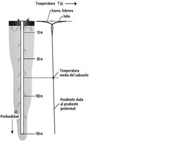

La corteza terrestre rebosa de calorías, y la forma más generalizada, a gran escala, de extraer esta energía consiste en perforar dos o más pozos, de extracción y de inyección. Cada día se desarrollan más estos recursos para fines tanto industriales, como por ejemplo, calefacción de edificios, descongelar carreteras, agua caliente sanitaria, etc. Como para viviendas unifamiliares.
La calefacción geotérmica o calefacción termodinámica, "también conocida como bombas de calor" con colectores enterrados, es el mismo sistema, que utiliza el refrigerador o "la nevera". Dispone de un circuito refrigerante, un compresor, un condensador y un evaporador. Cuando introducimos un alimento en el refrigerador, este lleva consigo unas calorías. En el interior de la nevera hay un captador compuesto de un circuito frigorífico, por el que circula un gas frigorífico, este líquido se disipa captando el calor que introducimos en el interior de la nevera junto con los alimentos.
Una vez captadas las calorías por el líquido, estas pasan por el compresor que las comprime, consiguiendo así aumentar la temperatura y traspasarlas al panel posterior del refrigerador.
Captar la energía del suelo para utilizar las calorías enterradas, la técnica geotérmica, utiliza el mismo sistema que el refrigerador, sólo varía donde capta y donde evapora las calorías.
El generador geotérmico capta el calor en el exterior por medio del captador enterrado y lo disipa en el interior de la vivienda mediante un circuito de suelo radiante, radiadores o ventilo convectores, aportándonos el confort de una calefacción a baja temperatura, todo ello respectando nuestro medio ambiente.